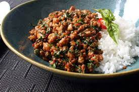

Spicy Thai Basil Chicken

Description
Thai basil chicken is a stir-fry dish made with finely chopped or ground
chicken cooked with chile peppers, garlic, and shallots, and seasoned with
a sweet and salty sauce and finished with fresh basil. It's a classic dish
in Thai cuisine and can be found in restaurants and as a popular street
food
Ingredients
For the Dish
- 2 tablespoons vegetable oil
- 1 pound skinless, boneless chicken thighs, coarsely chopped
- ¼ cup sliced shallots
- 4 cloves garlic, minced
- 2 tablespoons minced Thai chilies, Serrano, or other hot pepper
- 1 cup very thinly sliced fresh basil leaves
- 2 cups hot cooked rice
For the Sauce
- ⅓ cup chicken broth
- 1 tablespoon oyster sauce
- 1 tablespoon soy sauce, or as needed
- 2 teaspoons fish sauce
- 1 teaspoon white sugar
- 1 teaspoon brown sugar